git命令
git
执行git add file时 .git文件夹里发生了什么
新建file1.txt 添加内容 file2
git add file1.txt
- 在.git文件夹的objects文件下生成了:
- 08
- 219db9b0969fa29cf16fd04df4a63964da0b69
说明:08219db9b0969fa29cf16fd04df4a63964da0b69 是由(blob 5\0file1 -> 文件类型 文件长度\0文件内容 )经过hash算法算出来的
保存有文件的内容,类型,尺寸
使用 git cat-file -t 08219d 查看文件类型 blob
使用 git cat-file -s 08219d 查看文件尺寸 5
使用 git cat-file -p 08219d 查看文件内容 file1
- .git下生成了index文件
使用git ls-files 可以查看add进索引里的文件
使用git ls-files -s 可以显示更详细的信息(权限 hash值 0 文件名)
- 修改已经提交的文件(file2.txt) file2 ---> file2.
.git>objects下 生成了新的hash(第一次add file2.txt 生成的hash还在,并没有被覆盖)
- 提交一个空的文件(文件里面没有内容,也在object里生成hash文件,在index里有此文件)
再次使用 git cat-file -s/-t/-p hash值 查看文件信息| git ls-files -s查看索引区的所有文件详细信息
执行git commit -m''时发生了什么
会在.git/objects下生成两个新的对象(commit对象, tree对象)
查看commit object的类型 git cat-file -t hash值 -----> commit
查看commit object的内容 git cat-file -p hash值
tree 78cb5c0858286521651a06a70c08710020565a5a
author wuyupei 495174699@qq.com 1640172659 +0800
committer wuyupei 495174699@qq.com 1640172659 +0800
1commit
可以看出 保存了本次commit的内容
查看tree object的类型git cat-file -t hash值 ----> tree
查看tree object的内容git cat-file -p hash值
100644 blob 08219db9b0969fa29cf16fd04df4a63964da0b69 file1.txt
100644 blob 88a6f2c2238c2d495181417fa1a6838ab230ac91 file2.txt
100644 blob e69de29bb2d1d6434b8b29ae775ad8c2e48c5391 file3.txt
.git>logs>refs>head>master
cat ..git\refs\heads\master --> d5e4c65621d47c0c10149a7b2ca5630a72cac7ed(commit 对象的hash值)
.git>HEAD指向: cat ..git\HEAD -----> ref: refs/heads/master----->最新的commit对象
总结:拿到commit节点对象,可以通过git cat-file -p hash 查看内容(tree 对象对应的hash 提交着信息) ---> 在通过git cat-file -p hash查看内容(本次commit各个文件的hash值)----> git cat-file hash -p 查看各个文件的内容
HEAD文件
执行当前分支最新的commit
执行cat .git/HEAD -> ref: refs/heads/master
执行cat .git/refs/heads/master -> d5e4c65621d47c0c10149a7b2ca5630a72cac7ed
执行git cat-file d5e4c -t ---> commit -p/-s
分支
git branck查看所有分支
git branck dev 创建新分支
git checkout dev 切换到新的分支
利用git cat-file -p|-t|-s等查看信息
删除分支git branch -d|-D 删除分支
git对象的压缩
git gc
会把所有的object
git prune -n
查看执行git prune即将删除的垃圾对象
git fsck 查看垃圾对象
git verify-pack -v ( git verify-pack pack-b38749bbf5e5f1ad14857d3b3f1c0035d992c9f2.pack -v)
查看压缩进pack里的所有commit tree blob对象
本地仓库推送到远程仓库
打开gitee官网,新建一个空的仓库(不初始化仓库,不设置模板,不选择分支模型)点击创建,就会来到一个页面
然后到本地的git文件夹 git remote add origin https://gitee.com/wu-yu-pei/git-demo.git 添加远程仓库
然后在本地提交第一次commit --> 在提交 git push origin master
另外:
- 可以通过
git remote查看远程仓库名称 - 通过
git remote show origin(会联网)查看远程仓库信息
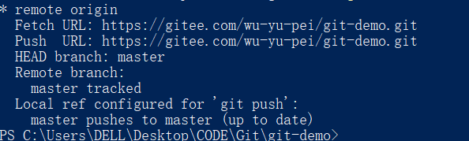
本地分支和远程分支
通过git branch查看本地分支
通过git branch -a查看本地分支和远程分支
如果此时在gitee上新建分支本地是看不出来的可以使用git remote show origin查看远程仓库的分支,因为此命令会联网
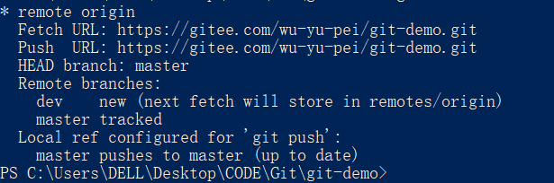
可以执行git fetch拉取最新git信息
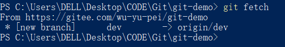
在执行`git branch -a就可以看到远程仓库上的分支了
如果在远程仓库删除dev分支
使用git remote show origin联网查看远程仓库信息
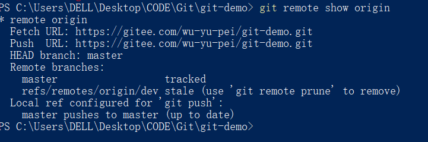
使用git branch -a查看分支信息发现与原来的分支信息一样
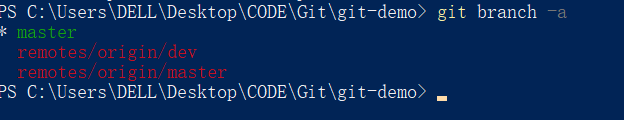
为什么呢?因为你没有使用git fetch拉去远程仓库的最新git信息
使用git fetch拉去信息 此时你会发现,什么也没有输出
在使用git branch -a查看所有分支信息发现还是原来的信息
因为git不会引入你执行了git fetch就去把你本地的dev分支删除
你应该执行git remote prune <banchname>或者执行git fetch --prune来删除你本地遗留的分支
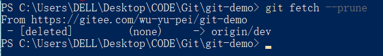
本地分支合并问题
首先git init初始化一个git仓库
新建文件a.txt -> a
执行git add a.txt git commit -m'master 1 commit
此时master分支上执行了一次commit
场创建dev分支并切换到该分支git branch dev git checkout dev或者git checkout -b dev
在dev分支上修改a.txt -> + add form dev branch
执行git add a.txt, git commit -m 'dev 1 commit'
切换到master分支 查看a.txt的文件,内容是: a 因为上面我们添加内容是在dev分支上的,不会应影响master上的原始文件
现在在master分支修改a.txt ---> + add form master branch
执行git add a.txt , git commit -m'master 2 commit'
现在我们需要把dev分支合并到master分支上
git merge dev
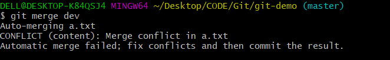
发现提示信息: Merge conflict in a.txt 意思是 合并出现了冲突在a.txt文件中
此时索引区会存在3个文件分别对应了a.txt的三个版本
使用git ls-files查看索引区的内容
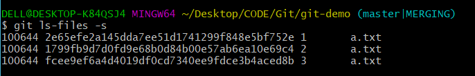
使用git cat-file -p查看三个文件内容
1:
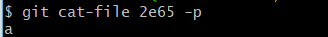
2:
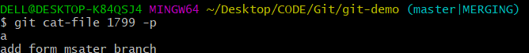
3:
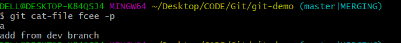
此时需要合并就需要先解决两个分支的冲突,打开a.txt文件发现git为我们添加了一些标记:
方法一:使用git branch工具的vim编辑器来解决 把对应的内容删掉就可以了 :wq回车保存并退出
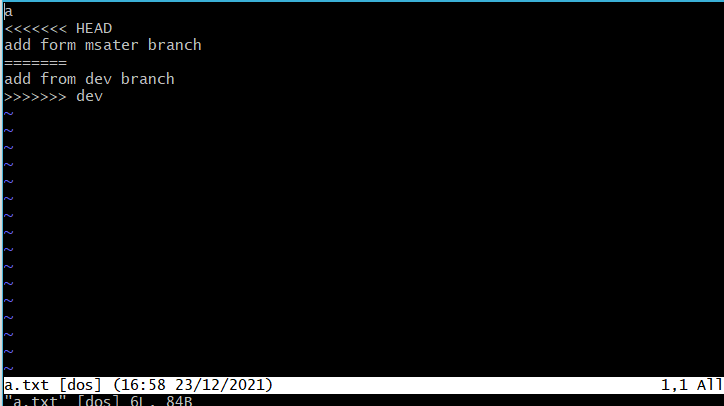
方法二:使用vscode来解决冲突
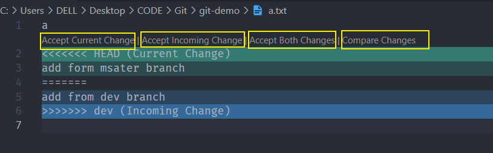
点击第三个框框的按钮就可以了
此时在执行git add a.txt把文件添加到索引区
使用git ls-files查看索引区文件,此时只有一个最新的a.txt文件
执行git commit:
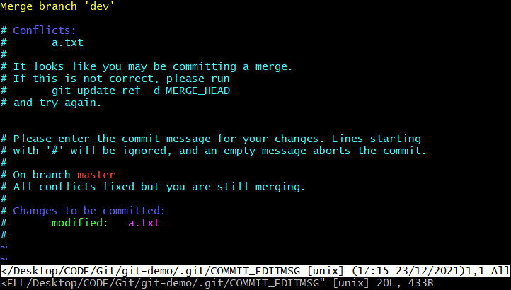
输入:wq退出并保存会看到如下信息:
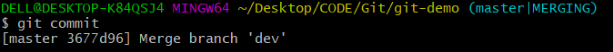
 js原生方法
js原生方法